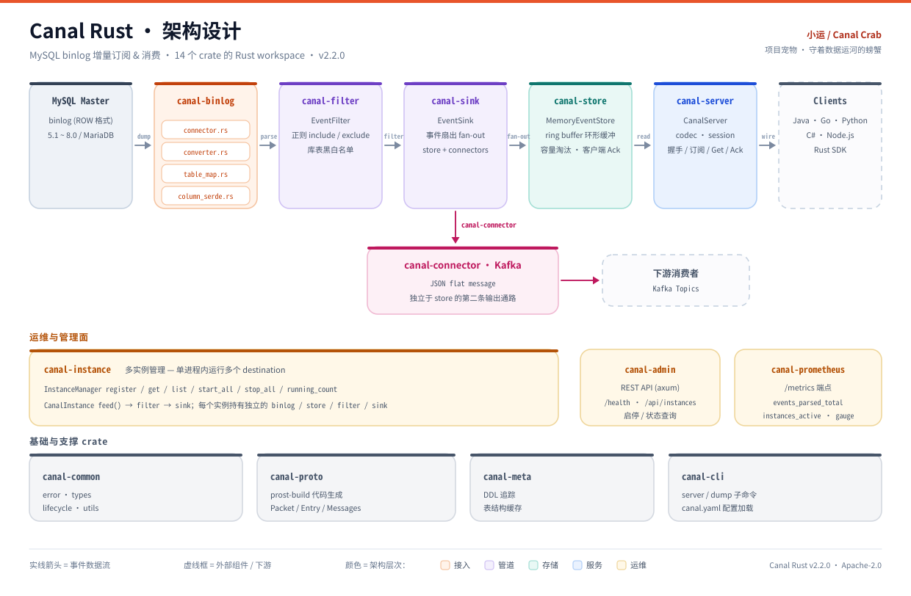

Protocol
0 行
客户端代码需要修改
复用 Canal 上游 .proto，Java / Go / Python / C# / Node.js 客户端按原方式连接。
CanalProtocol.protoEntryProtocol.protoprost
MySQL binlog · Rust rewrite
Canal Rust 模拟 MySQL slave，向主库发送 dump 请求，解析 binlog， 再通过 Canal protobuf 协议把变更事件送往下游。14 个 crate，一条完整的 接入 → 解析 → 过滤 → 存储 → 输出 → 确认 链路。


01 / WHY
不改客户端，不改协议，只把 JVM 换成原生二进制。Canal Rust 保留了 Java Canal 的协议语义，同时把整条链路拆成 14 个可以独立演进的 crate。
Protocol
0 行
复用 Canal 上游 .proto，Java / Go / Python / C# / Node.js 客户端按原方式连接。
Workspace
14
接入、处理、输出、编排、运维、基础六层解耦。每一层都可以单独编译、测试和替换。
Ingest
基于 mysql_cdc 连接 MySQL 5.1–8.0 / MariaDB，支持 position 与 GTID 位点，把 TableMap 映射成统一事件模型。
Backpressure
内存 ring buffer 保存事件，容量溢出自动淘汰；客户端确认消费后推进位点，不让下游被淹没。

Operate
单进程运行多个 destination；事件可扇出到 TCP 客户端或 Kafka，Prometheus 指标和 Admin API 一并带上。
02 / FLOW
从 MySQL 的 binlog 到下游消费者，每一次变更都被接住、检查、排队、送出， 直到客户端确认。哪一段慢了，都能在指标里看见。

canal-binlog 连接 MySQL、拉取 binlog，转换为统一事件模型。canal-filter 正则过滤库表，canal-sink 把事件扇出到多个出口。canal-store 环形缓冲，canal-server 提供 TCP 协议，canal-connector 投递 Kafka。canal-instance 管理多个 destination，每个实例独占一条完整链路。canal-admin 启停 API、canal-prometheus 指标、canal-cli 命令行入口。canal-common 类型与生命周期、canal-proto protobuf 生成、canal-meta 表结构缓存。03 / MASCOT
项目宠物不是一个贴纸，而是这条链路的角色化解释：流量要有人控制， 事件要有人送达。小运站在闸墙上，顺便把 Rust、ring buffer 和 fan-out 都演了一遍。
小运是这条数据运河的闸官。锈红色外壳对应 Rust；左钳拧着闸门水轮， 决定放多少数据过去；右钳托着一枚发光的事件，把变更送往下游。上游还漂着一卷 binlog 日志，闸下的水里是已经放行的数据包。
04 / RELEASES
先把链路跑通，再重构基础设施，然后把小运接进运行时。每个版本都留下可回看的记录。
第一期完成：从 binlog 到客户端的核心链路贯通。
phase 1基础设施与大重构：配置、错误处理、生命周期统一，为后续修复建立地基。
refactor重绘小运，修复连接阻塞等正确性问题，补齐 Docker 与 CI 基建。
mascot小运进入运行时：canal-rust pet、--help 与 Admin /pet.svg，389 项测试全部通过。
05 / SUPPORT
代码部分遵循 Apache-2.0；项目宠物与视觉资产不在此列。如果这条运河对你的项目有帮助， 欢迎扫码支持一杯咖啡。点击二维码可以打开大图。


项目宠物、图片与表情为非开源视觉资产，商业使用需取得书面授权。代码部分遵循 Apache-2.0。